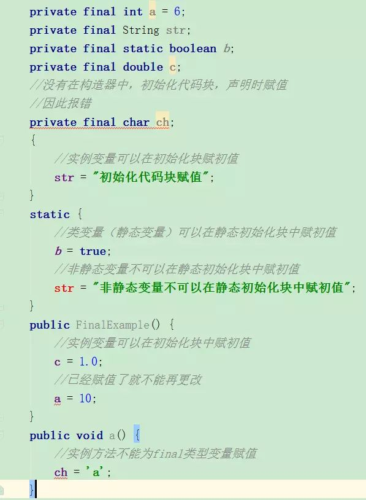
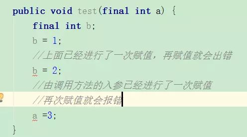
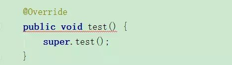
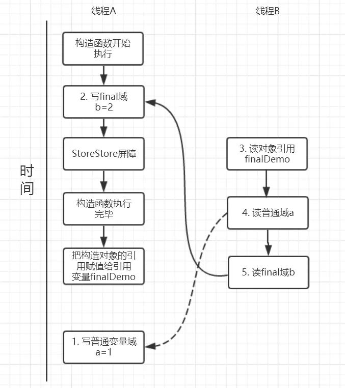
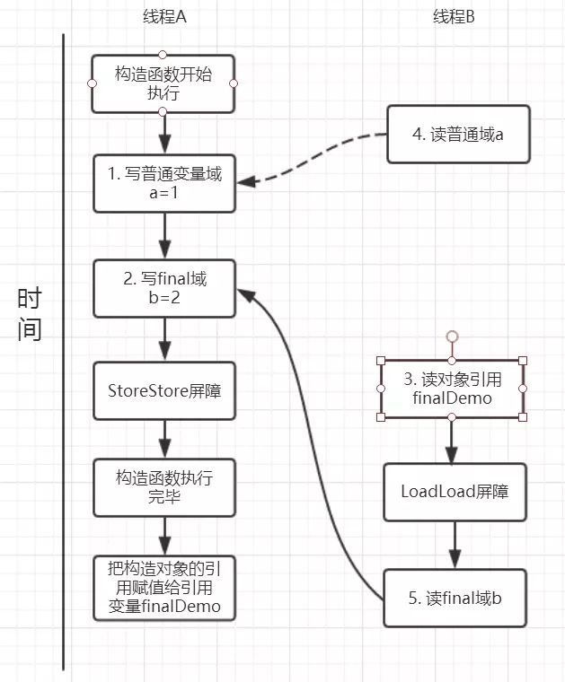
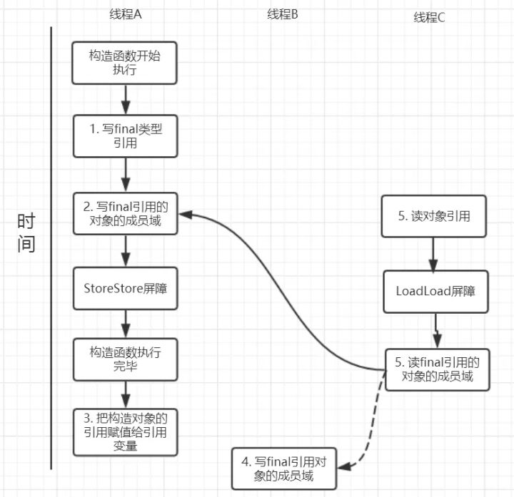
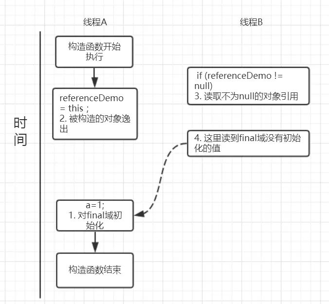

本人免费整理了Java高级资料，涵盖了Java、Redis、MongoDB、MySQL、Zookeeper、Spring Cloud、Dubbo高并发分布式等教程，一共30G，需要自己领取。
传送门：https://mp.weixin.qq.com/s/JzddfH-7yNudmkjT0IRL8Q
1. final的简介
final可以修饰变量，方法和类，用于表示所修饰的内容一旦赋值之后就不会再被改变，比如String类就是一个final类型的类。即使能够知道final具体的使用方法，我想对final在多线程中存在的重排序问题也很容易忽略，希望能够一起做下探讨。
2. final的具体使用场景
final能够修饰变量，方法和类，也就是final使用范围基本涵盖了java每个地方，下面就分别以锁修饰的位置：变量，方法和类分别来说一说。
2.1 变量
在java中变量，可以分为成员变量以及方法局部变量。因此也是按照这种方式依次来说，以避免漏掉任何一个死角。
2.1.1 final成员变量
通常每个类中的成员变量可以分为类变量（static修饰的变量）以及实例变量。针对这两种类型的变量赋初值的时机是不同的，类变量可以在声明变量的时候直接赋初值或者在静态代码块中给类变量赋初值。
而实例变量可以在声明变量的时候给实例变量赋初值，在非静态初始化块中以及构造器中赋初值。类变量有两个时机赋初值，而实例变量则可以有三个时机赋初值。
当final变量未初始化时系统不会进行隐式初始化，会出现报错。这样说起来还是比较抽象，下面用具体的代码来演示。（代码涵盖了final修饰变量所有的可能情况，耐心看下去会有收获的:) ）

看上面的图片已经将每种情况整理出来了，这里用截图的方式也是觉得在IDE出现红色出错的标记更能清晰的说明情况。现在我们来将这几种情况归纳整理一下：
2.2.2 final局部变量
final局部变量由程序员进行显式初始化，如果final局部变量已经进行了初始化则后面就不能再次进行更改，如果final变量未进行初始化，可以进行赋值，当且仅有一次赋值，一旦赋值之后再次赋值就会出错。下面用具体的代码演示final局部变量的情况：

现在我们来换一个角度进行考虑，final修饰的是基本数据类型和引用类型有区别吗？
final基本数据类型 VS final引用数据类型
通过上面的例子我们已经看出来，如果final修饰的是一个基本数据类型的数据，一旦赋值后就不能再次更改，那么，如果final是引用数据类型了？这个引用的对象能够改变吗？我们同样来看一段代码。
public class FinalExample {
//在声明final实例成员变量时进行赋值
private final static Person person = new Person(24, 170);
public static void main(String[] args) {
//对final引用数据类型person进行更改
person.age = 22;
System.out.println(person.toString());
}
static class Person {
private int age;
private int height;
public Person(int age, int height) {
this.age = age;
this.height = height;
}
@Override
public String toString() {
return "Person{" +
"age=" + age +
", height=" + height +
'}';
}
}
}
当我们对final修饰的引用数据类型变量person的属性改成22，是可以成功操作的。通过这个实验我们就可以看出来当final修饰基本数据类型变量时，不能对基本数据类型变量重新赋值，因此基本数据类型变量不能被改变。
而对于引用类型变量而言，它仅仅保存的是一个引用，final只保证这个引用类型变量所引用的地址不会发生改变，即一直引用这个对象，但这个对象属性是可以改变的。
宏变量
利用final变量的不可更改性，在满足一下三个条件时，该变量就会成为一个“宏变量”，即是一个常量。
注意：当程序中其他地方使用该宏变量的地方，编译器会直接替换成该变量的值
2.2 方法
重写？
当父类的方法被final修饰的时候，子类不能重写父类的该方法，比如在Object中，getClass()方法就是final的，我们就不能重写该方法，但是hashCode()方法就不是被final所修饰的，我们就可以重写hashCode()方法。我们还是来写一个例子来加深一下理解： 先定义一个父类，里面有final修饰的方法test();
public class FinalExampleParent { public final void test() { } } 复制代码
然后FinalExample继承该父类，当重写test()方法时出现报错，如下图：

通过这个现象我们就可以看出来被final修饰的方法不能够被子类所重写。
重载？
public class FinalExampleParent {
public final void test() {
}
public final void test(String str) {
}
}
可以看出被final修饰的方法是可以重载的。经过我们的分析可以得出如下结论：
1. 父类的final方法是不能够被子类重写的
2. final方法是可以被重载的
2.3 类
当一个类被final修饰时，表名该类是不能被子类继承的。子类继承往往可以重写父类的方法和改变父类属性，会带来一定的安全隐患，因此，当一个类不希望被继承时就可以使用final修饰。还是来写一个小例子：
public final class FinalExampleParent {
public final void test() {
}
}
父类会被final修饰，当子类继承该父类的时候，就会报错，如下图：
3. final的例子
final经常会被用作不变类上，利用final的不可更改性。我们先来看看什么是不变类。
不变类
不变类的意思是创建该类的实例后，该实例的实例变量是不可改变的。满足以下条件则可以成为不可变类：
JDK中提供的八个包装类和String类都是不可变类，我们来看看String的实现。
/** The value is used for character storage. */
private final char value[];
可以看出String的value就是final修饰的，上述其他几条性质也是吻合的。
4. 多线程中你真的了解final吗？
上面我们聊的final使用，应该属于Java基础层面的，当理解这些后我们就真的算是掌握了final吗？有考虑过final在多线程并发的情况吗？在java内存模型中我们知道java内存模型为了能让处理器和编译器底层发挥他们的最大优势，对底层的约束就很少，也就是说针对底层来说java内存模型就是一弱内存数据模型。
同时，处理器和编译为了性能优化会对指令序列有编译器和处理器重排序。那么，在多线程情况下,final会进行怎样的重排序？会导致线程安全的问题吗？下面，就来看看final的重排序。
4.1 final域重排序规则
4.1.1 final域为基本类型
先看一段示例性的代码：
public class FinalDemo {
private int a; //普通域
private final int b; //final域
private static FinalDemo finalDemo;
public FinalDemo() {
a = 1; // 1. 写普通域
b = 2; // 2. 写final域
}
public static void writer() {
finalDemo = new FinalDemo();
}
public static void reader() {
FinalDemo demo = finalDemo; // 3.读对象引用
int a = demo.a; //4.读普通域
int b = demo.b; //5.读final域
}
}
假设线程A在执行writer()方法，线程B执行reader()方法。
写final域重排序规则
写final域的重排序规则禁止对final域的写重排序到构造函数之外，这个规则的实现主要包含了两个方面：
JMM禁止编译器把final域的写重排序到构造函数之外；
我们再来分析writer方法，虽然只有一行代码，但实际上做了两件事情：
我们来画下存在的一种可能执行时序图，如下：

由于a,b之间没有数据依赖性，普通域（普通变量）a可能会被重排序到构造函数之外，线程B就有可能读到的是普通变量a初始化之前的值（零值），这样就可能出现错误。
而final域变量b，根据重排序规则，会禁止final修饰的变量b重排序到构造函数之外，从而b能够正确赋值，线程B就能够读到final变量初始化后的值。
因此，写final域的重排序规则可以确保：在对象引用为任意线程可见之前，对象的final域已经被正确初始化过了，而普通域就不具有这个保障。比如在上例，线程B有可能就是一个未正确初始化的对象finalDemo。
读final域重排序规则
读final域重排序规则为：在一个线程中，初次读对象引用和初次读该对象包含的final域，JMM会禁止这两个操作的重排序。（注意，这个规则仅仅是针对处理器），处理器会在读final域操作的前面插入一个LoadLoad屏障。
实际上，读对象的引用和读该对象的final域存在间接依赖性，一般处理器不会重排序这两个操作。但是有一些处理器会重排序，因此，这条禁止重排序规则就是针对这些处理器而设定的。
read()方法主要包含了三个操作：
假设线程A写过程没有重排序，那么线程A和线程B有一种的可能执行时序为下图：

读对象的普通域被重排序到了读对象引用的前面就会出现线程B还未读到对象引用就在读取该对象的普通域变量，这显然是错误的操作。而final域的读操作就“限定”了在读final域变量前已经读到了该对象的引用，从而就可以避免这种情况。
读final域的重排序规则可以确保：在读一个对象的final域之前，一定会先读这个包含这个final域的对象的引用。
4.1.2 final域为引用类型
我们已经知道了final域是基本数据类型的时候重排序规则是怎么的了？如果是引用数据类型了？我们接着继续来探讨。
对final修饰的对象的成员域写操作
针对引用数据类型，final域写针对编译器和处理器重排序增加了这样的约束：在构造函数内对一个final修饰的对象的成员域的写入，与随后在构造函数之外把这个被构造的对象的引用赋给一个引用变量，这两个操作是不能被重排序的。
注意这里的是“增加”也就说前面对final基本数据类型的重排序规则在这里还是使用。这句话是比较拗口的，下面结合实例来看。
public class FinalReferenceDemo {
final int[] arrays;
private FinalReferenceDemo finalReferenceDemo;
public FinalReferenceDemo() {
arrays = new int[1]; //1
arrays[0] = 1; //2
}
public void writerOne() {
finalReferenceDemo = new FinalReferenceDemo(); //3
}
public void writerTwo() {
arrays[0] = 2; //4
}
public void reader() {
if (finalReferenceDemo != null) { //5
int temp = finalReferenceDemo.arrays[0]; //6
}
}
}
针对上面的实例程序，线程线程A执行wirterOne方法，执行完后线程B执行writerTwo方法，然后线程C执行reader方法。下图就以这种执行时序出现的一种情况来讨论（耐心看完才有收获）。

由于对final域的写禁止重排序到构造方法外，因此1和3不能被重排序。由于一个final域的引用对象的成员域写入不能与随后将这个被构造出来的对象赋给引用变量重排序，因此2和3不能重排序。
对final修饰的对象的成员域读操作
JMM可以确保线程C至少能看到写线程A对final引用的对象的成员域的写入，即能看下arrays[0] = 1，而写线程B对数组元素的写入可能看到可能看不到。JMM不保证线程B的写入对线程C可见，线程B和线程C之间存在数据竞争，此时的结果是不可预知的。如果可见的，可使用锁或者volatile。
关于final重排序的总结
按照final修饰的数据类型分类：
基本数据类型:
引用数据类型：
额外增加约束：禁止在构造函数对一个final修饰的对象的成员域的写入与随后将这个被构造的对象的引用赋值给引用变量 重排序
5.final的实现原理
上面我们提到过，写final域会要求编译器在final域写之后，构造函数返回前插入一个StoreStore屏障。读final域的重排序规则会要求编译器在读final域的操作前插入一个LoadLoad屏障。
很有意思的是，如果以X86处理为例，X86不会对写-写重排序，所以StoreStore屏障可以省略。由于不会对有间接依赖性的操作重排序，所以在X86处理器中，读final域需要的LoadLoad屏障也会被省略掉。
也就是说，以X86为例的话，对final域的读/写的内存屏障都会被省略！具体是否插入还是得看是什么处理器
6. 为什么final引用不能从构造函数中“溢出”
这里还有一个比较有意思的问题：上面对final域写重排序规则可以确保我们在使用一个对象引用的时候该对象的final域已经在构造函数被初始化过了。但是这里其实是有一个前提条件的，也就是：在构造函数，不能让这个被构造的对象被其他线程可见，也就是说该对象引用不能在构造函数中“逸出”
以下面的例子来说：
public class FinalReferenceEscapeDemo {
private final int a;
private FinalReferenceEscapeDemo referenceDemo;
public FinalReferenceEscapeDemo() {
a = 1; //1
referenceDemo = this; //2
}
public void writer() {
new FinalReferenceEscapeDemo();
}
public void reader() {
if (referenceDemo != null) { //3
int temp = referenceDemo.a; //4
}
}
}
可能的执行时序如图所示：

假设一个线程A执行writer方法另一个线程执行reader方法。因为构造函数中操作1和2之间没有数据依赖性，1和2可以重排序，先执行了2，这个时候引用对象referenceDemo是个没有完全初始化的对象，而当线程B去读取该对象时就会出错。
尽管依然满足了final域写重排序规则：在引用对象对所有线程可见时，其final域已经完全初始化成功。但是，引用对象“this”逸出，该代码依然存在线程安全的问题。